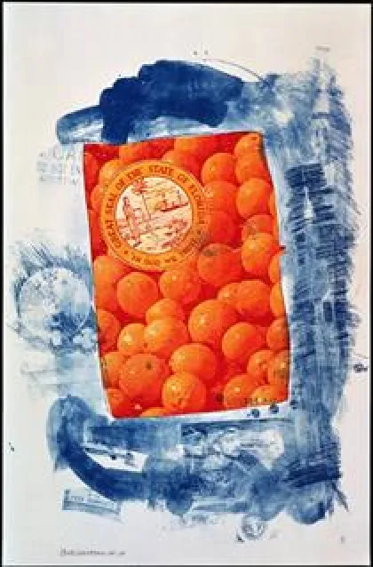
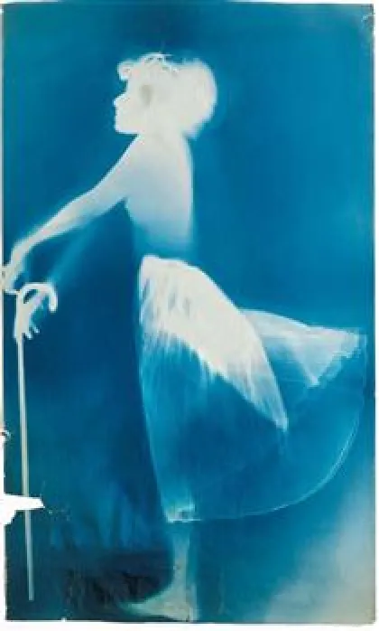
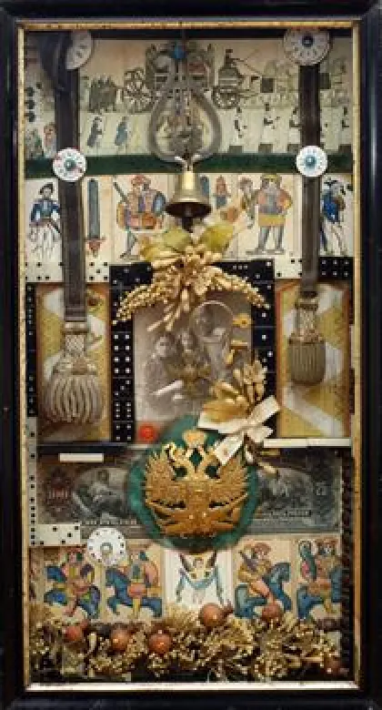

<!DOCTYPE html>
<html lang="fr" x-data="{menuIsOpen: false}" :class="{noscroll:menuIsOpen,}"></html>
<html lang="fr">
<head>
    <meta charset="UTF-8">
    <meta http-equiv="X-UA-Compatible" content="IE=edge">
    <meta name="viewport" content="width=device-width, initial-scale=1.0">
    <title>Daay'o</title>
    <script defer src="https://unpkg.com/alpinejs"></script>
    <link rel="stylesheet" href="../src/css/style.css">
    
</head>
<body>

    <header>

        <button aria-controls="mainNav" @click="menuIsOpen = ! menuIsOpen"
        class="header__icone--menu-burger">
        
        
        </button>
        <nav
        id="mainNav" x-show="menuIsOpen" x-transition.duration.800ms class="menu">

        <ul>
            <li><a class="menu__list" href="./serguei_paradjanov.html">Sergueï paradjanov</a></li>
            <li><a class="menu__list" href="./leonid_sejka.html">Leonid Sejka</a></li>
            <li><a class="menu__list" href="./robert_rauschenberg.html">Robert Rauschenberg</a></li>
            <li><a class="menu__list" href="./jospeh_beuys.html">Joseph Beuys</a></li>
            <li><a class="menu__list" href="./billeterie.html"> Billetterie</a></li>
        </ul>
        </nav>

        <a href="../en/home_page.html">
            
        </a>

        <h1 class="header__nom--site">Daay'o</h1>

    </header>

        <section class="intro">
            

            <div class="text__intro"> 

                <p class="paragraphe--text-intro">
                    Le Néo-Dada est un mouvement artistique contemporain qui présente des similitudes dans ses méthodes et ses intentions avec le mouvement Dada.
                </p>

                <p class="paragraphe--text-intro">
                    Bien qu'il ait principalement les mêmes objectifs que ce dernier, 
                    le Néo-Dada <q> met l'accent sur la production de l'œuvre d'art plutôt que sur le concept généré par celle-ci </q>. 
                </p>

                <p class="paragraphe--text-intro">
                    Il a contribué à l'essor du Fluxus, du Pop art et du nouveau réalisme.
                </p>

            </div>

        </section>

        <div class="motif_barre-barre--droite"></div>

        <section class="arcticle">
        <article class="article__gauche">

            <a href="./serguei_paradjanov.html">
                

                <div class="description__artiste">

                    <h2 class="description__artiste--titre">Sergueï Iossifovitch Paradjanov</h2>

                    <p class="courte__description--article">Est un réalisateur qui fut controversé en Union soviétique. </p>

                    <p class="courte__description--article">
                        Un contact précoce avec les objets d’art a façonné son imaginaire et son goût pour les collections. 
                        Il a inspiré sa pratique passionnée des collages, qui tiennent à la fois de l’art conceptuel et du folklore naïf.
                    </p>

                </div>

            </a>

        </article>

        <div class="motif_barre-barre--gauche"></div>

        <article class="article__droite">

            <a href="./leonid_sejka.html">
                

                <div class="description__artiste">

                    <h2 class="description__artiste--titre">Leonid Sejka</h2>

                    <p class="courte__description--article">
                        Était un peintre et architecte serbe. Il était membre et fondateur du groupe artistique Mediala.
                    </p>

                    <p class="courte__description--article">
                        Šejka est désormais considéré comme l'un des peintres les plus originaux de Yougoslavie.
                    </p>

                </div>

            </a>

        </article>

        <div class="motif_barre-barre--droite"></div>

        <article class="article__gauche">

            <a href="./robert_rauschenberg.html">

                

                <div class="description__artiste">

                    <h2 class="description__artiste--titre">Robert Rauschenberg</h2>

                    <p class="courte__description--article">
                        Il appartient au mouvement Neo-Dada est l'un des précurseurs du Pop art; 
                        ses réalisations vont de la peinture à la gravure, en passant par la photographie, la chorégraphie et la musique.
                    </p>

                </div>
            </a>

        </article>

        <div class="motif_barre-barre--gauche"></div>

        <article class="article__droite">

            <a href="./jospeh_beuys.html">

                

                <div class="description__artiste">

                    <h2 class="description__artiste--titre">Joseph Beuys</h2>

                    <p class="courte__description--article">
                        Est un artiste allemand qui a produit nombre de dessins, de sculptures, de performences, 
                        fluxus, happening de vidéos, d’installations et de théories, dans un ensemble artistique très engagé politiquement.
                    </p>

                    <p class="courte__description--article">
                        Sa naissance commence déjà par une fiction...
                    </p>

                </div>
            </a>

        </article>
        </section>

        <div class="motif_barre-barre--droite"></div>

        <section>

            <p class="text_info--expo">
                Le musée Quartier organise une exposition temporaire sur le Neo Dada, venez y pour découvrir des artistes tous aussi fantastique les uns que les autres.
            </p>

            <p class="text_info--expo">
                L'exposition se déroulera du 13 avril au 23 juin 2021 à la Fondation Cartier, 261 Bd Raspail, 75014 Paris.
            </p>

            <a href="./billeterie.html"><p class="text_reservation--billets">
                prenez vos billets ici
            </p></a>

        </section>  

        <div>
            <p class="aprecu__carrousel">Aperçu des différentes oeuvres présente lors de l'exposition</p>
        </div>

        <div class="carrousel" x-data="{}">

            <div class="carrousel_parent-oeuvre" x-ref="parent">
                
                <div id="oeuvre-1" class="carrousel_oeuvre">
                    <figure>
                        
                        <figcaption class="carrousel__image-oeuvre" >1970 - Banner Stoned Moon</figcaption>
                    </figure>
                </div>
                <div id="oeuvre-2" class="carrousel_oeuvre">
                    <figure>
                        
                        <figcaption class="carrousel__image-oeuvre" >1969 - Signs</figcaption>
                    </figure>
                </div>
                <div id="oeuvre-3" class="carrousel_oeuvre">
                    <figure>
                        
                        <figcaption class="carrousel__image-oeuvre" >1969 - Terasa tigra</figcaption>
                    </figure>
                </div>
                <div id="oeuvre-4" class="carrousel_oeuvre">
                    <figure>
                        
                        <figcaption class="carrousel__image-oeuvre" >1951-1952 - Bug der Argo</figcaption>
                    </figure>
                </div>
                <div id="oeuvre-5" class="carrousel_oeuvre">
                    <figure>
                        
                        <figcaption class="carrousel__image-oeuvre" >1983 - Life and death of general Radko</figcaption>
                    </figure>
                </div>
            </div>

            <div class="carrousel__button">
                <button @click="$refs.parent.scrollLeft -= $refs.parent.clientWidth/2" class="carrousel_boutton carrousel_boutton-suivant" aria-label="oeuvre précedant">
                
                </button>
        
                <button @click="$refs.parent.scrollLeft += $refs.parent.clientWidth/2" class="carrousel_boutton carrousel_boutton-precedent" aria-label="oeuvre suivant"> 
                
                </button>
            </div>
        </div>
    </div>


    <footer>

        <a href="./index.html"><h1 class="footer__nom-site">Daay'o</h1></a>

        <ul>
            
            <li class="footer__pages-annexes">
                <a href="./a_propos.html">A propos</a>
            </li>

            <li class="footer__pages-annexes">
                <a href="./contact.html">Contact</a>
            </li>
        </ul>

        <ul class="footer__reseaux">
            <li>
                <a href="">
                    </a>
            </li>

            <li>
                <a href="">
                    </a>
            </li>

            <li>
                <a href="">
                    </a>
                </li>
        </ul>

        <a class="footer_mailto" href="">event-daayo@gmail.com</a>

        <p class="footer__copyright">Copyright © 2023-Faris Halepovic-MMi 1A2 Montbéliard</p>

    </footer>
    
</body>
</html>